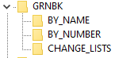

| - |
|
Electronic Green Book On this page you will find the CD-i Full Functional Specification (Green Book) in plain text format, organized both by name and by number, for easy access and searching. These files were recovered from the Engineering 5.0 disc, a disc image of which can be found in the CD-i Disc Images Downloads section.  The files are all in OS-9 text format which your web browser should handle fine, but may cause problems for other programs. For convenience you can also download these files as a single ZIP archive. Download GRNBK.zip (477 KB). ReadMe - ReadMe for the Electronic Green Book Contents - collected Table of Contents for all chapters ReadMe - ReadMe for the by-chapter-name version of the Green Book Contents - collected Table of Contents for all chapters Figures - collected list of figures glossary - glossary of terms Preface - preface to the Green Book audio - Audio Data Representations - Chapter IV basecase - Base Case System - Chapter VIII data_retrieval - Data Retrieval Structure - Chapter III disc_format - CD-I Disc Format - Chapter II disc_format_app - CD-I Disc Format - Appendix II introduction - Introduction - Chapter I progdata - Program-related Data Representations - Chapter VI rtos - CD-RTOS (Compact Disc Real-time Operating System) - Chapter VII rtos_app - CD-RTOS - Appendix VII video - Video Real-time Data Representations - Chapter V video_app - Video - Appendix V ReadMe - ReadMe for the by-chapter-number version of the Green Book Contents - collected Table of Contents for all chapters Figures - collected list of figures Glossary - glossary of terms Preface - preface to the Green Book chap1 - Chapter I - Introduction chap2 - Chapter II - CD-I Disc Format chap3 - Chapter III - Data Retrieval Structure chap4 - Chapter IV - Audio Data Representations chap5 - Chapter V - Video Real-time Data Representations chap6 - Chapter VI - Program-related Data Representations chap7 - Chapter VII - CD-RTOS (Compact Disc Real-time Operating System) chap8 - Chapter VIII - Base Case System app1 - Appendix I - Glossary of Terms app2 - Appendix II - CD-i Disc Format app5 - Appendix V - Video app7 - Appendix VII - CD-RTOS ReadMe - ReadMe for change lists changesm rev33mac rev3july rev4 |
|
|